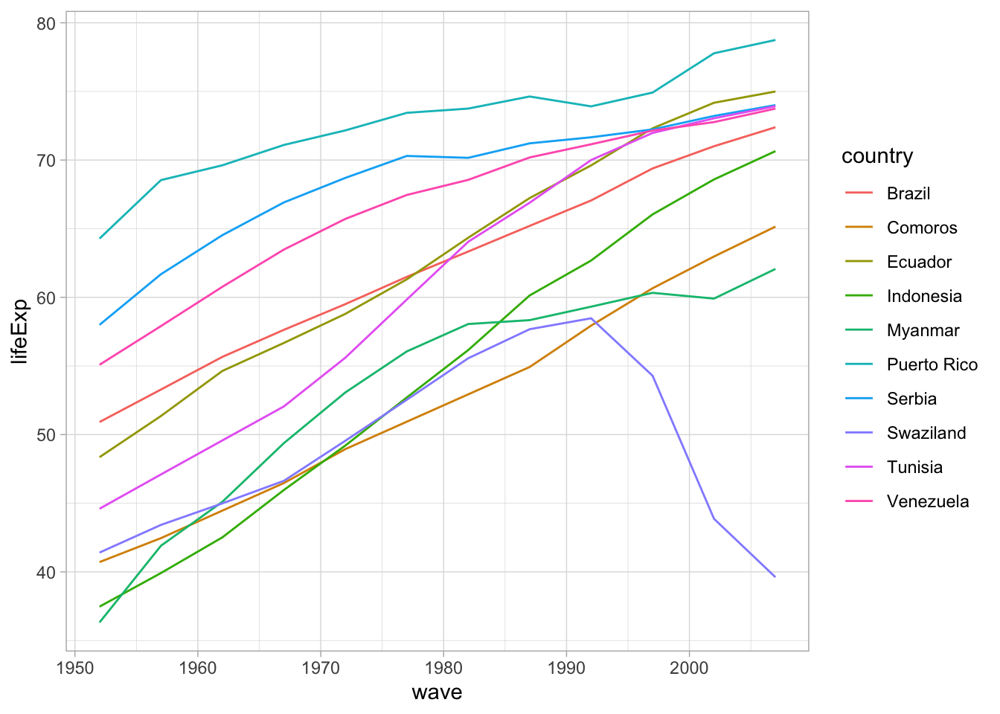

── Attaching core tidyverse packages ──────────────────────── tidyverse 2.0.0 ──
✔ dplyr 1.1.4 ✔ readr 2.1.5
✔ forcats 1.0.0 ✔ stringr 1.5.0
✔ ggplot2 3.4.3 ✔ tibble 3.2.1
✔ lubridate 1.9.2 ✔ tidyr 1.3.0
✔ purrr 1.0.2
── Conflicts ────────────────────────────────────────── tidyverse_conflicts() ──
✖ dplyr::filter() masks stats::filter()
✖ dplyr::lag() masks stats::lag()
ℹ Use the conflicted package (<http://conflicted.r-lib.org/>) to force all conflicts to become errors
library(panelr)
Loading required package: lme4
Loading required package: Matrix
Attaching package: 'Matrix'
The following objects are masked from 'package:tidyr':
expand, pack, unpack
Attaching package: 'panelr'
The following object is masked from 'package:stats':
filter
Use the panelr package to turn the dataset back to its original long form and save it as gap_long
gap_long <-long_panel(gap_wide, periods =seq(1952, 2007, by =5)) |>select(wave, continent, country, lifeExp, gdpPercap, pop)gap_long
# Panel data: 1,704 × 7
# Entities: id [142]
# Wave variable: wave [1952, 1957, 1962, ... (12 waves)]
id wave continent country lifeExp gdpPercap pop
<fct> <dbl> <fct> <fct> <dbl> <dbl> <int>
1 1 1952 Asia Afghanistan 28.8 779. 8425333
2 1 1957 Asia Afghanistan 30.3 821. 9240934
3 1 1962 Asia Afghanistan 32.0 853. 10267083
4 1 1967 Asia Afghanistan 34.0 836. 11537966
5 1 1972 Asia Afghanistan 36.1 740. 13079460
6 1 1977 Asia Afghanistan 38.4 786. 14880372
7 1 1982 Asia Afghanistan 39.9 978. 12881816
8 1 1987 Asia Afghanistan 40.8 852. 13867957
9 1 1992 Asia Afghanistan 41.7 649. 16317921
10 1 1997 Asia Afghanistan 41.8 635. 22227415
# ℹ 1,694 more rows
Use the panelr package to turn the gap_long into gap_wide, replicating pivot_wider()
gap_wide <-widen_panel(gap_long)gap_wide
# A tibble: 142 × 39
id continent country lifeExp_1952 gdpPercap_1952 pop_1952 lifeExp_1957
<fct> <fct> <fct> <dbl> <dbl> <int> <dbl>
1 1 Asia Afghanistan 28.8 779. 8425333 30.3
2 2 Europe Albania 55.2 1601. 1282697 59.3
3 3 Africa Algeria 43.1 2449. 9279525 45.7
4 4 Africa Angola 30.0 3521. 4232095 32.0
5 5 Americas Argentina 62.5 5911. 17876956 64.4
6 6 Oceania Australia 69.1 10040. 8691212 70.3
7 7 Europe Austria 66.8 6137. 6927772 67.5
8 8 Asia Bahrain 50.9 9867. 120447 53.8
9 9 Asia Bangladesh 37.5 684. 46886859 39.3
10 10 Europe Belgium 68 8343. 8730405 69.2
# ℹ 132 more rows
# ℹ 32 more variables: gdpPercap_1957 <dbl>, pop_1957 <int>,
# lifeExp_1962 <dbl>, gdpPercap_1962 <dbl>, pop_1962 <int>,
# lifeExp_1967 <dbl>, gdpPercap_1967 <dbl>, pop_1967 <int>,
# lifeExp_1972 <dbl>, gdpPercap_1972 <dbl>, pop_1972 <int>,
# lifeExp_1977 <dbl>, gdpPercap_1977 <dbl>, pop_1977 <int>,
# lifeExp_1982 <dbl>, gdpPercap_1982 <dbl>, pop_1982 <int>, …
10.2 - lifeExp visualization
r10_countries <- gap_wide |>sample_n(10) |>long_panel(prefix ="_", periods =seq(1952, 2007, by =5))lifeYear <-ggplot(r10_countries, aes(x = wave, y = lifeExp, color = country)) +geom_line() +theme_light()lifeYear

10.3 - Intra-class Correlation
What is the ICC for lifeExp, pop, and gdpPercap in the gapminder dataset?
m_lifeExp <-lmer(lifeExp ~ (1| country), data = gapminder, REML =FALSE)summary(m_lifeExp)
Linear mixed model fit by maximum likelihood ['lmerMod']
Formula: lifeExp ~ (1 | country)
Data: gapminder
AIC BIC logLik deviance df.resid
11904.1 11920.4 -5949.0 11898.1 1701
Scaled residuals:
Min 1Q Median 3Q Max
-3.03671 -0.61927 0.09445 0.66708 2.49420
Random effects:
Groups Name Variance Std.Dev.
country (Intercept) 119.40 10.927
Residual 47.36 6.882
Number of obs: 1704, groups: country, 142
Fixed effects:
Estimate Std. Error t value
(Intercept) 59.474 0.932 63.81
lifeExp:
119.40/ (119.40+47.36)
[1] 0.715999
m_pop <-lmer(pop ~ (1| country), data = gapminder, REML =FALSE)summary(m_pop)
Linear mixed model fit by maximum likelihood ['lmerMod']
Formula: pop ~ (1 | country)
Data: gapminder
AIC BIC logLik deviance df.resid
64464.1 64480.4 -32229.0 64458.1 1701
Scaled residuals:
Min 1Q Median 3Q Max
-12.1266 -0.0542 -0.0087 0.0352 12.7742
Random effects:
Groups Name Variance Std.Dev.
country (Intercept) 1.021e+16 101031917
Residual 1.055e+15 32487495
Number of obs: 1704, groups: country, 142
Fixed effects:
Estimate Std. Error t value
(Intercept) 29601212 8514859 3.476
pop:
1.021e+16/ (1.021e+16+1.055e+15)
[1] 0.9063471
m_gdpPercap <-lmer(gdpPercap ~ (1| country), data = gapminder, REML =FALSE)summary(m_gdpPercap)
Linear mixed model fit by maximum likelihood ['lmerMod']
Formula: gdpPercap ~ (1 | country)
Data: gapminder
AIC BIC logLik deviance df.resid
34543.8 34560.1 -17268.9 34537.8 1701
Scaled residuals:
Min 1Q Median 3Q Max
-6.6831 -0.1807 -0.0377 0.1164 9.4757
Random effects:
Groups Name Variance Std.Dev.
country (Intercept) 69177620 8317
Residual 27934767 5285
Number of obs: 1704, groups: country, 142
Fixed effects:
Estimate Std. Error t value
(Intercept) 7215.3 709.6 10.17
gdpPercap:
69177620/ (69177620+27934767)
[1] 0.712346
10.4 - WageDatalmers
data("WageData", package ="panelr")WageData <- WageData |>mutate(college =if_else(ed >=16, 1L, 0L), # college variablet0 = t -1# start time at 0 )
Log wage as a function of college and linear time
lw_col_time =lmer(lwage ~ college + t + (1| id), data = WageData, REML =FALSE)summary(lw_col_time)
Linear mixed model fit by maximum likelihood ['lmerMod']
Formula: lwage ~ college + t + (1 | id)
Data: WageData
AIC BIC logLik deviance df.resid
-1605.8 -1574.1 807.9 -1615.8 4160
Scaled residuals:
Min 1Q Median 3Q Max
-11.7145 -0.3543 0.0322 0.4068 12.6683
Random effects:
Groups Name Variance Std.Dev.
id (Intercept) 0.12694 0.3563
Residual 0.02356 0.1535
Number of obs: 4165, groups: id, 595
Fixed effects:
Estimate Std. Error t value
(Intercept) 6.191778 0.018008 343.84
college 0.353487 0.033183 10.65
t 0.096933 0.001189 81.51
Correlation of Fixed Effects:
(Intr) colleg
college -0.505
t -0.264 0.000
… plus a random slope on time
lw_rt =lmer(lwage ~ college + t + (1+ t | id), data = WageData, REML =FALSE)summary(lw_rt)
Linear mixed model fit by maximum likelihood ['lmerMod']
Formula: lwage ~ college + t + (1 + t | id)
Data: WageData
AIC BIC logLik deviance df.resid
-1975.2 -1930.8 994.6 -1989.2 4158
Scaled residuals:
Min 1Q Median 3Q Max
-13.1426 -0.3160 0.0119 0.3403 14.5525
Random effects:
Groups Name Variance Std.Dev. Corr
id (Intercept) 0.126791 0.35608
t 0.001231 0.03509 -0.19
Residual 0.017816 0.13348
Number of obs: 4165, groups: id, 595
Fixed effects:
Estimate Std. Error t value
(Intercept) 6.198887 0.017746 349.32
college 0.327539 0.032735 10.01
t 0.096933 0.001772 54.72
Correlation of Fixed Effects:
(Intr) colleg
college -0.505
t -0.260 0.000
… now with time as a quadratic
lw_qt =lmer(lwage ~ college + t +I(t^2) + (1+ t +I(t^2) | id), data = WageData, REML =FALSE)
Warning in checkConv(attr(opt, "derivs"), opt$par, ctrl = control$checkConv, :
Model failed to converge with max|grad| = 0.105632 (tol = 0.002, component 1)
summary(lw_qt)
Linear mixed model fit by maximum likelihood ['lmerMod']
Formula: lwage ~ college + t + I(t^2) + (1 + t + I(t^2) | id)
Data: WageData
AIC BIC logLik deviance df.resid
-2066.5 -1996.9 1044.3 -2088.5 4154
Scaled residuals:
Min 1Q Median 3Q Max
-13.5299 -0.3003 0.0237 0.3374 14.1059
Random effects:
Groups Name Variance Std.Dev. Corr
id (Intercept) 1.169e-01 0.341975
t 7.911e-03 0.088944 -0.13
I(t^2) 8.852e-05 0.009409 0.03 -0.92
Residual 1.611e-02 0.126932
Number of obs: 4165, groups: id, 595
Fixed effects:
Estimate Std. Error t value
(Intercept) 6.1596409 0.0184339 334.148
college 0.3121458 0.0321341 9.714
t 0.1259078 0.0059071 21.314
I(t^2) -0.0036219 0.0006864 -5.277
Correlation of Fixed Effects:
(Intr) colleg t
college -0.478
t -0.380 0.000
I(t^2) 0.317 0.000 -0.954
optimizer (nloptwrap) convergence code: 0 (OK)
Model failed to converge with max|grad| = 0.105632 (tol = 0.002, component 1)
Comparing models with BIC
c(BIC(lw_col_time), BIC(lw_rt), BIC(lw_qt))
[1] -1574.123 -1930.822 -1996.859
The lowest BIC score belongs to model 3 with the quadratic term - slightly beating the model with random slope on time included, where both of these models significantly beat model 1.
Report the estimated effect of college on log wages given the data and model. You can get this using tidy(), summary(), or any other function you prefer.
According to model3, college increases log earnings by 0.312
Use ggpredict() |> plot() (or another approach) to plot predictions for a sample of 9 individuals over time.
wageSample <- WageData |>mutate(p =predict(lw_qt)) |>group_by(id) |>nest() |>ungroup() |>slice_sample(n =9) |>unnest(data)ggplot(wageSample, aes(x = t0, y = p, color =factor(id))) +geom_line()